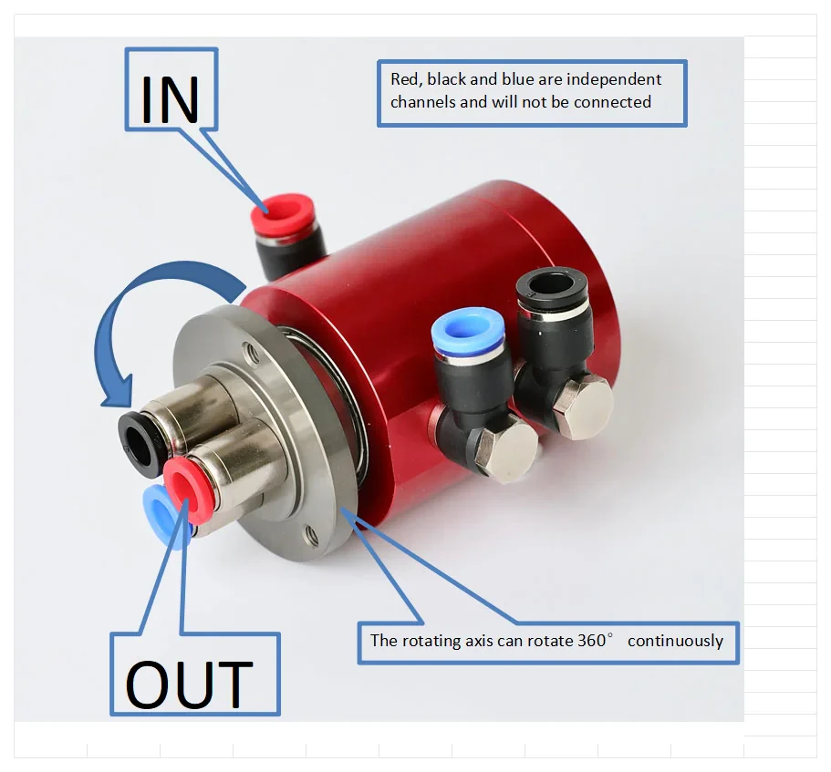

Руководство по выбору
Как выбрать пневматическое ротационное соединение: 5 параметров, которые предотвращают дорогостоящие ошибки
Количество каналов, давление, RPM, совместимость с рабочая среда и тип крепления. Пять проверок, которые занимают пять минут — получение их неправильно, занимает пять недель простоя.